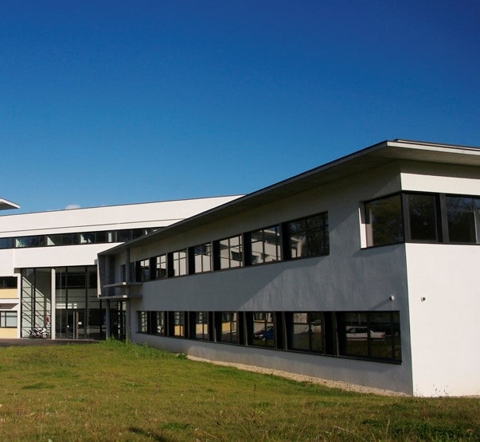

Qui suis-je ?
Passionné par l'informatique depuis mon adolescence, je suis un jeune étudiant
informaticien en devenir qui rechercheà constamment se perfectionner dans ce milieu.
Motivation et créativité sont pour moi les maîtres
mots de ce domaine, qui nécessite une constante évolution.
J'étudie actuellement pour obtenir mon DUT au cours de cette année.
Je prévois l'an prochain de poursuivre mes études à Télécom Nancy sur le parcours ingénieur, où j'aurai la possibilité
de me spécialiser dans la sécurité informatique.

